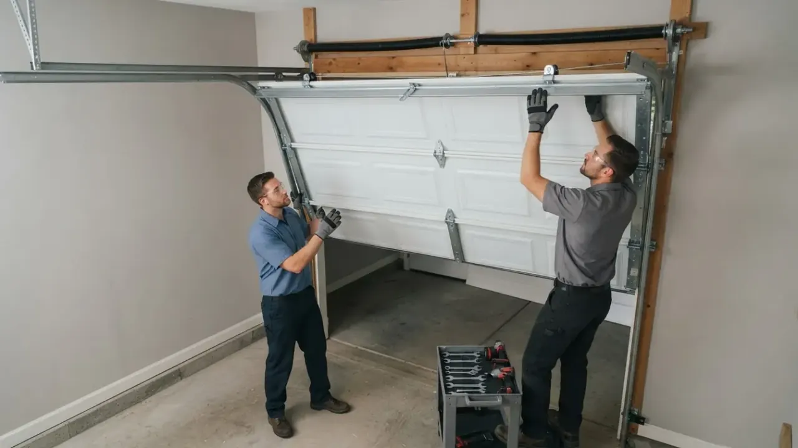

Tune-ups, lubrication and safety checks for every Tampa garage door
Garage Door Maintenance in Tampa That Stops Breakdowns
A yearly maintenance visit is the cheapest way to stop a small problem becoming a midnight emergency. Our garage door maintenance in Tampa inspects torsion springs, galvanized steel cables, nylon rollers and photo eye sensors, then adjusts and lubricates everything before it fails. If you own a home in Hillsborough County, a yearly visit costs far less than an emergency repair at midnight. We work on LiftMaster, Chamberlain, Genie and Craftsman systems every day.
Live dispatcherUpfront optionsBacked workmanship
The basics
What Is Garage Door Maintenance?
Garage door maintenance is the scheduled inspection, adjustment, and lubrication of the whole door system, done before parts fail rather than after. Tampa's salt air and summer heat are hard on steel: humidity rusts galvanized steel cables, and 95-degree afternoons cook the lubricant out of garage door opener gears. A typical visit takes 60 to 90 minutes and covers 15 to 20 checkpoints, from spring tension and cable wear to track alignment and opener force settings.
What's included
What Is Included in Every Maintenance Visit
Every maintenance visit follows the same 18 checkpoints, so nothing is skipped because the door sounded fine that day. Here is what is included.
18-Point Inspection
We check spring tension, cable fray, roller wear, hinge tightness, track alignment, panel condition, weather seal, bottom rubber seal, and opener force settings. The full list runs to 18 points, and each one is checked, not glanced at.
Balance and Adjustment
A balanced door should hold halfway open with no help. Most doors need 10 to 20 minutes of adjustment, and we set the tension so the opener lifts the door instead of fighting it.
Full Lubrication
We apply garage door lubricant to springs, hinges, rollers and bearing plates, using a formula that holds up in Florida humidity. Heat and salt air dry out ordinary lubricant fast, so the product matters here.
Safety System Test
We test the photo eye sensors with a sensor alignment tool, check the auto-reverse with a 2x4 block, and confirm the opener meets UL 325. The safety system is tested on every visit, not just when something looks wrong.
Written Report
You get a one-page summary: what we adjusted, what is wearing, and what to watch over the next 12 months. The report is the point of the visit, because it tells you what will fail next and when.
Service overview
What Garage Door Maintenance in Tampa Covers
Tampa's salt air and summer heat are hard on steel. Humidity rusts galvanized steel cables, and 95-degree afternoons cook the lubricant out of garage door opener gears. That is why a routine garage door maintenance visit matters here more than in drier climates: the parts age faster, and the failures are more disruptive when they happen at night.
We see doors in South Tampa and Westchase with springs that have lost lift after a few summers, and torsion springs rated for about 10,000 cycles often fail well before that rating in Tampa heat. Catching spring fatigue early is the single most valuable part of the visit, and a standard torsion spring replacement runs $180 to $350 installed, which we stock common sizes for on the truck.

How we workWe verify the cause, compare realistic options, and confirm the repair before we leave.
The service timeline
How Our Maintenance Visit Runs
A maintenance visit is an inspection first and a repair second. These five steps keep it that way.
Phone Triage
You call or book online and describe the door. The dispatcher asks what the door is doing and whether anything has changed since the last visit, so the technician arrives with the right parts.
Full Inspection
The tech walks the door through 18 checkpoints: spring tension, cable fray, roller wear, hinge tightness, track alignment, panel dents, and opener force settings. Inspection alone takes about 20 minutes.
Adjust and Lubricate
We balance the door, tighten the track bolts, and lubricate the springs, hinges, and rollers with garage door lubricant rated for high humidity. Most doors need 10 to 20 minutes of adjustment.
Safety and Opener Test
We test the photo eye sensors with a sensor alignment tool, check the auto-reverse with a 2x4 block, and run the opener through three full cycles. Our techs follow UL 325 and ANSI/DASMA 102 on every visit.
Report and Next Steps
You get a written summary: what we adjusted, what is wearing, and what to watch. If a part needs replacing, you get the price before we fit it, and most sensor fixes take under 15 minutes and are included in the tune-up price.
Timing questions
How long does a garage door maintenance visit take in Tampa?
A standard maintenance visit usually takes about an hour, depending on the size of the door and what is found. If the technician finds a worn part that needs replacing, that adds time, and you will be told the price before any extra work starts. A visit that is over in ten minutes probably did not include a real inspection of the springs, cables, and safety sensors.
Tools & methods
Tools and Standards We Work With
Maintenance is mostly inspection, so the tools are the ones that measure and test rather than cut and fit.
Garage door torsion spring winding bars
Winding bars are used to safely release and set tension on torsion springs during adjustment or replacement. Spring tension is adjusted, never guessed.
Garage door torque wrench
A torque wrench lets us set hinge and track bolts to spec instead of guessing. Bolts tightened by feel either strip or work loose, and both show up later.
Garage door roller removal tool
Worn rollers come out of the hinge cleanly with a removal tool, no bent track and no scratched panel. The swap takes minutes instead of half an hour, and the door keeps its finish.
Garage door sensor alignment tool
A sensor alignment tool lines up photo eye sensors so the safety reverse works every time. Sensors drift with vibration and heat, and a maintenance visit squares them again.
Garage door track bender
A track bender straightens minor bends in the track instead of replacing the whole section. Small bends are common on older doors and cheap to fix when caught early.
Garage door opener remote tester
A remote tester confirms whether a remote is transmitting at the right frequency or the opener receiver is at fault. A weak remote is often the first sign of a failing receiver.
Garage door panel lift
A panel lift supports a door section safely during panel or hinge work. Maintenance sometimes finds a panel that needs attention, and the lift keeps that work safe.
Use cases
When to Book Garage Door Maintenance
Maintenance visits are where failures get caught before they happen. These are two catches that saved their owners an emergency call.

Frayed Cable Caught Before It Snapped
A frayed cable in South Tampa was down to its last strands where it met the drum. → How we handle it: We replace both cables, reset the drums, rebalance the door, and note the corrosion pattern in the written report.
Stuck Door in Brandon Back to Same-Day Use
A stuck door in Brandon had a stripped opener gear and a door that had not been serviced in years. → How we handle it: We replace the gear, lubricate the rail and rollers, balance the door, and get it back to same-day use.
Booking questions
Who offers garage door maintenance in Tampa?
We do, and we are local to Hillsborough County. Our techs follow UL 325 and ANSI/DASMA 102 on every visit. We service Downtown Tampa, Hyde Park, South Tampa, Westchase, New Tampa, Brandon and Riverview. Call +1 (773) 915-6384 and we will book a tune-up, often the same day.
Problems we solve
Problems a Tampa Tune-Up Catches Early
Maintenance catches the failures that turn into emergencies. Here are the problems a visit finds most in Tampa.
Broken torsion spring with the car inside
A broken torsion spring with the car inside is the call maintenance exists to prevent. We check spring tension and cycle wear, and replace springs that are near the end of their life before they snap.
Snapped garage door cable
A snapped garage door cable usually starts as fraying where the cable meets the drum. We measure cable wear on every visit and replace cables that are thinning before they let go.
Garage door opener not working
A garage door opener that is not working often has a stripped gear, a dry rail, or a door that is out of balance and overloading the motor. We work on LiftMaster, Chamberlain, Genie and Craftsman units, and replace opener gears when lubrication alone will not fix the noise.
Blinking safety sensor
A blinking safety sensor usually means the photo eyes have drifted out of line or the wiring has corroded. Most sensor fixes take under 15 minutes and are included in the tune-up price.
About this service
What is included in garage door maintenance in Tampa?
Every visit covers 18 checkpoints: spring tension, cable condition, roller wear, hinge tightness, track alignment, panel condition, weather seal, and opener force settings. A maintenance visit covers a full inspection of the springs, cables, rollers, hinges, and tracks, tightening of the hardware, lubrication of the moving parts, a balance test, and safety tests on the photo eye sensors and the auto-reverse. The opener is checked too, including the drive and the remote. We lubricate springs, hinges and rollers, test the photo eye sensors and auto-reverse, and check your remotes and wall mount keypads. You get a written report listing anything that is close to failing, and if the visit finds a worn part, it is quoted separately and agreed before any extra work is done.
What is the difference between garage door maintenance and a tune-up in Tampa?
They are very similar, and many companies use the words for the same visit. A maintenance visit is usually a scheduled yearly service that inspects, lubricates, and adjusts the whole system. A tune-up often means the same checklist done as a one-off visit, and usually means the hands-on work: lubrication, adjustment, and testing. Maintenance is the wider plan: the scheduled visits, the checks between visits, and the record of what was done. In practice, a maintenance visit includes a tune-up, and the plan is what keeps the schedule from slipping. Either way, ask what is included before you book, so you know whether the visit covers the springs, cables, rollers, and safety sensors, or only a quick lubrication.
Can garage door maintenance prevent a spring from breaking in Tampa?
It cannot stop a spring from wearing out, since springs have a limited number of cycles, but it can catch a spring that is weakening before it snaps. During maintenance the technician checks the springs for rust, gaps, and stretching, and tests the balance of the door. If a spring is near the end of its life, you will be told before it fails, so you can plan the replacement instead of dealing with a door stuck shut.
Do I need garage door maintenance if my door is working fine?
Yes, because the parts that fail do so quietly. A spring loses tension gradually, a cable frays a strand at a time, and a sensor drifts out of alignment a little at a time. None of those show up until the day the door stops working or the safety system fails. A maintenance visit catches them while they are still small, and it tests the safety systems, which is the part that matters most.
Pricing process
What Garage Door Maintenance Costs in Tampa
$95 - $450 depending on scope
Door size and count
A single-car door takes about 60 minutes to maintain; a three-car door can take 90. The price follows the time on site and the number of doors, so a bigger garage costs more to service properly.
Opener type
Chain-drive openers need different checks than belt-drive or smart units. LiftMaster, Chamberlain, Genie and Marantec all have their own force and travel settings, and the visit covers the ones your opener actually has.
Parts replaced
Rollers, hinges, weather seal and bottom rubber seal are inexpensive and often swapped during a tune-up. Spring or cable replacement is quoted separately, usually $180 to $450 installed, depending on whether one spring or a pair is needed.
Cost factors at a glance
| Cost factor | What affects the price |
|---|---|
| Typical range on this page | $95 - $450 depending on scope |
| Door size and count | A single-car door takes about 60 minutes to maintain; a three-car door can take 90. |
| Opener type | Chain-drive openers need different checks than belt-drive or smart units. |
| Parts replaced | Rollers, hinges, weather seal and bottom rubber seal are inexpensive and often swapped during a tune-up. |
Ranges are the ones stated on this page; you get a written estimate before work starts.
Cost questions
How much does garage door maintenance cost in Tampa?
A standard tune-up in Tampa runs $95 to $165 in 2026, and a full maintenance plan with two visits a year costs $180 to $260. Price depends on door size, opener type, and whether we replace small parts like rollers or a bottom rubber seal. Spring or cable replacement is quoted separately, usually $180 to $450 installed. You get the number before we start.
Customer reviews
What Tampa Neighbors Say
★★★★★
“My door was shaking and loud enough to wake the house. Their tech spent 80 minutes balancing it, swapping four steel rollers for nylon, and greasing everything. It runs quiet now and the opener does not strain. He also showed me a cable that was starting to fray and replaced it the same visit. Fair price, no upsell.”
★★★★★
“We are two blocks from the bay and everything rusts. They put on a new bottom rubber seal and galvanized cables, then set me up on a twice-a-year plan because our door faces west. Second visit took an hour and cost less than the first. The door has not stuck once since, even through summer.”
★★★★★
“Called at 7 a.m. with a broken torsion spring and the truck trapped inside. They had a tech out by 11 and the door working by 12:30. He used proper winding bars, replaced both springs, and rebalanced the door. Explained what caused it and what to check. Straight answers, no runaround.”
Book with confidence
What to Look for Before You Book
A maintenance plan is a relationship, not a single visit, so the company matters. These checks help you pick well.
- Before any work starts, ask for the licence number and confirm it matches the company name on the quote.
- Ask how many checkpoints the visit covers, and whether you get the findings in writing.
- Insist on a written price covering the visit and any parts, and ask how a spring or cable found worn mid-visit gets priced.
- Ask how long the parts and the labour are covered, and get that warranty in writing rather than as a promise.
- Check that the visit ends with a written report and a safety reverse test, not just a spray of lubricant.
- When the technician arrives, confirm the vehicle is marked and they can say which company sent them.
The plan
Building a Maintenance Plan That Fits Your Door
A maintenance plan is not one-size-fits-all, because doors are used differently. A door that opens twice a day for a car needs a yearly visit. A door that is the main entrance to the house, opening six or eight times a day, needs a visit every six to nine months. A door on a rental property, where nobody is watching for early signs, needs a scheduled visit whether it looks fine or not, because nobody will notice the noise getting worse. The plan starts with how the door is used, not with a calendar.
The plan also covers what happens between visits. The homeowner checks are simple: listen for new noises, watch whether the door is slower or heavier, check the sensor lights are on and steady, and look for rust on the springs and cables. Those four checks take a minute a month, and they catch most problems while they are still small. The technician visit covers the rest: the balance test, the safety tests, the lubrication, and the hardware check. Together, the plan keeps the door running and the safety systems tested.
- Yearly: the right interval for a typical household door used a few times a day.
- Every six to nine months: for a door that is the main entrance and cycles many times a day.
- Scheduled, not optional: for a rental property, where nobody is watching for early signs.
- Monthly homeowner checks: listen, watch the speed, check the sensor lights, and look for rust.
- Yearly technician visit: balance, safety tests, lubrication, and hardware, done properly.
How long things last
How often should I service my garage door in Tampa?
Once a year is the minimum, and twice a year is better in Tampa because of humidity and heat. Doors that face west and bake in afternoon sun wear faster, so we often recommend a spring and fall visit. If your door cycles more than six times a day, book every eight months. A $99 tune-up beats a $385 emergency repair.
Costs
What Maintenance Saves: The Real Cost of Skipping It
Skipping maintenance feels like saving money, until the bill arrives. A yearly maintenance visit is a small, predictable cost. A broken spring that was never lubricated is a larger one. An opener that burned out because it spent a year lifting a door the springs no longer supported is larger still. And a door that came off its tracks because a seized roller was ignored is the largest of all, because it can mean a new track, new rollers, and a new panel. The maintenance visit is cheap because it catches the small things before they become the big ones.
The costs that do not show on a bill matter too. A door that fails on a Monday morning means a missed day of work. A door that will not close means a home that cannot be secured. And a door whose safety systems have never been tested is a risk to children and pets that no repair bill can measure. Maintenance is not just about the door lasting longer, although it does. It is about the door being safe and reliable on the day you need it, which is every day.
- Small and predictable: a yearly visit costs far less than any single breakdown repair.
- Springs: a lubricated spring lasts longer than a dry one, and a snapped spring is an emergency call.
- Openers: an opener lifting a door the springs no longer support will burn out early.
- Off-track damage: a seized roller ignored for months can mean a new track, rollers, and panel.
- The hidden costs: a missed day of work, a home that cannot be secured, and untested safety systems.
Records
Keeping Records: Why Your Door's Service History Matters
A garage door is one of the few parts of a house that has no service book, and that is a shame, because the history matters. Knowing when the springs were last replaced tells you how much life they have left. Knowing when the opener was installed tells you whether it is worth repairing or replacing. And knowing what was found on the last visit tells the next technician where to look first. A simple record, even just the date and what was done, turns guesswork into knowledge.
The record matters at sale time too. A buyer who can see that the door has been serviced every year, with the springs and the safety systems checked, has one less reason to worry. And if a part fails under warranty, the service record is what proves the door was maintained, which is often a condition of the warranty. We keep a record of every visit we make, and we will tell you what was done and what to watch for, so the history of your door is not lost between visits.
- Springs: knowing the replacement date tells you how much life is left.
- Opener: knowing the install date tells you whether repair or replacement is the right call.
- Last visit: what was found last time tells the next technician where to look first.
- At sale time: a serviced door with records is one less worry for a buyer.
- Warranty: a service record is often needed to prove the door was maintained.
Related services
Other Garage Door Work We Handle

Garage Door Repair
General repair covers the whole system, not just the parts a tune-up touches. If the door is off track, noisy, or binding as well, this is the service that fixes it all in one visit.
Garage Door Spring Repair
When a torsion spring snaps, the door turns into dead weight and the opener strains against it. We fit matched pairs, wind them with proper bars, and balance the door so it holds level.
Garage Door Opener Repair
After a storm-season surge, openers often hum, trip the breaker, or drop their remote pairing. We repair LiftMaster, Chamberlain, Genie and Craftsman units and check the safety reverse before we leave.Ready when you are
Book Garage Door Maintenance in Tampa This Week
Book a maintenance visit this week and stop the next breakdown before it happens. A standard tune-up runs $95 to $165, and a full maintenance plan with two visits a year costs $180 to $260. Call now and we will book a tune-up, often the same day.

Talk with the local team
Request Garage Door Maintenance
Call, text or email and a real person answers, day or night. Tell us what the door is doing and we will give you a price range on the spot plus the soonest arrival window. Most calls placed before mid-afternoon get a same-day visit anywhere in Hillsborough County.